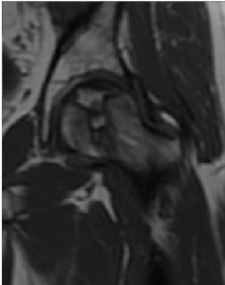

Ficha del catálogo
Necrosis avascular de la cabeza femoral
- Sistema
- Óseo
- Modalidad
- RM
- Región
- Cadera
- Dificultad
- Avanzado
Muerte del hueso subcondral por interrupción del aporte vascular, con factores de riesgo como corticoides, alcohol, traumatismo, drepanocitosis y enfermedades del tejido conectivo. Evoluciona hacia el colapso de la superficie articular y la artrosis secundaria. El diagnóstico precoz es clave porque solo antes del colapso existen tratamientos que preservan la articulación.
Técnica
Resonancia magnética de ambas caderas con secuencias T1 y sensibles al líquido en plano coronal, que es la técnica más sensible y precoz.
Qué observar
- Línea serpiginosa de baja señal en T1 que delimita el segmento necrótico
- Signo de la doble línea en las secuencias sensibles al líquido
- Localización anterosuperior de la cabeza femoral, zona de máxima carga
- Aplanamiento del contorno de la cabeza femoral como signo de colapso
- Signo de la media luna subcondral en radiografía, previo al colapso franco
- Afectación bilateral frecuente, motivo para estudiar siempre ambas caderas
Hallazgos
Segmento subcondral delimitado por una línea serpiginosa en la porción anterosuperior de la cabeza femoral, con o sin colapso de la superficie articular.
Perlas
La radiografía es normal en las fases iniciales y la resonancia detecta la lesión meses antes. Estudiar siempre las dos caderas porque la afectación bilateral es habitual aunque solo duela un lado.
Diagnóstico diferencial
- Edema óseo transitorio de cadera
- Edema difuso sin línea de demarcación y resolución espontánea.
- Fractura subcondral por insuficiencia
- Línea paralela al hueso subcondral en paciente osteoporótico.
- Coxartrosis primaria
- Pinzamiento, osteofitos y quistes sin segmento necrótico delimitado.
Simuladores
- Islote óseo epifisario
- Artefactos de campo en la interfase articular
- Contusión ósea reciente
Por modalidad
- RX
- Normal al inicio, muestra esclerosis y colapso en fases avanzadas
- RM
- Método de elección por su detección precoz
- TC
- Define bien la fractura subcondral y el colapso
Protocolo
Resonancia coronal T1 y con supresión grasa de ambas caderas, con serie axial complementaria para valorar la extensión del segmento afectado.
Clasificación
Los sistemas de estadificación combinan la normalidad radiográfica inicial, la aparición de esclerosis, el colapso subcondral y la artrosis secundaria final.
Errores frecuentes
- Descartar el diagnóstico por radiografía normal
- Estudiar solo la cadera sintomática
- No valorar el colapso, que es el dato que decide el tratamiento

necrosis avascular osteonecrosis cabeza femoral doble linea corticoides colapso subcondral